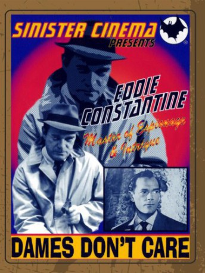

#6536 Serenade für 2 Pistolen
 
 IMDB-Wertung: 6.0 / 10
IMDB-Wertung: 6.0 / 10  Metascore: 0
Metascore: 0 
Lemmy Caution is back! He hooks up with a fellow agent at a night club to exchange info about a beautiful babe the FBI has under observation. Later, Eddie finds his fellow agent murdered and stuffed into a refrigerator! Who is the mysterious woman? Is she or her friends responsible for the murder? One of the better Caution series entries.
Jahr: 1954
Dauer: 100 Minuten
FSK: 16
Land: Frankreich Studio: Constantin FilmTonspuren:
Untertitel:
Auflösung: SD (640x480) Größe: 698 MB
Genre: Action, Drama, Krimi, Mystery
Regisseur: Bernard Borderie
Drehbuch: Peter Cheyney
Soundtrack:
Darsteller:
 Eddie Constantine als Selby Frayme / Lemmy Caution
Eddie Constantine als Selby Frayme / Lemmy Caution- Nadia Gray als Henrietta Aymes
- Dominique Wilms als Paulette Burdell
- François Perrot als Langdon Burdell
- Giani Esposito als Man at the Poker Game , uncredited
- Robert Berri als Fernandez / Jean Termiglio
- Darío Moreno als Perera, the Head Waiter
- Nicolas Vogel als Jim Maloney
- Paul Azaïs als Guard at the Pier
- Guy Henry als Daredo, Paulette's Friend
- Emilio Carrer als Dr. Madrales
- Gil Delamare als Sagers
- Dominique Bukar als Bénito Burdell
- Georgette Anys als Mrs. Martinguez
- Martine Alexis als Cynthia
- Anne-Marie Mersen als Rita, Casa Branca's Telephone Operator
- Christiane Paray als Sylvana, the Blonde Barmaid
- Ariane Lancell als
- Robert Burnier als Metts, the Police Chief
- Jacques Castelot als Granworth Aymes
- Grégoire Gromoff als Foreigner at the Poker Game
- Luce Aubertin als Marlène, the Brunette Barmaid
- Jack Ary als Casa Antica's Waiter , uncredited
- Jacques Butin als (uncredited
- Hélène Constantine als Sprange, the Clinic Nurse , uncredited
- Isabelle Eber als (uncredited
- Pascale Roberts als Casa Antica's Cigarette Vendor , uncredited
Datei: X:\Person\Eddie Constantine\Serenade für 2 Pistolen (1954, FSK16, 640x480).avi seit 05.07.2017
Festplatte: HD Collection-7+mehr(A-Z)+Person
 Es gibt insgesamt 10 Filme in der Gruppe 'Person\Eddie Constantine'
Es gibt insgesamt 10 Filme in der Gruppe 'Person\Eddie Constantine'